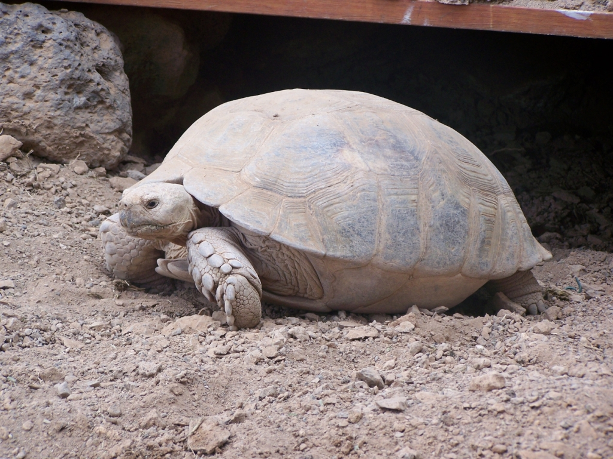

Uwe, die alte Schildkröte mit 207 Jahren verstorben  Es war das Herz Tiefe Trauer bei seinen 83 Kindern und 2412 Enkeln Zoo-Direktor Peter: "Uwe wird uns mit seiner ruhigen und besonnenen Art sehr fehlen".